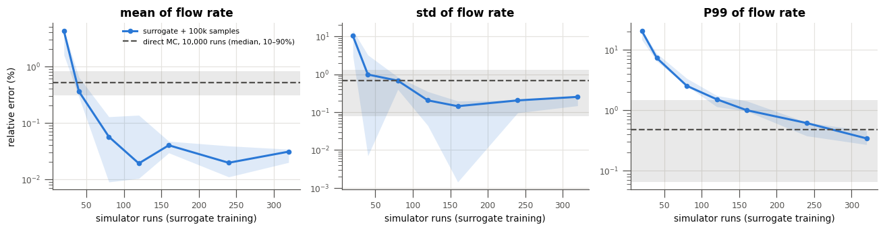
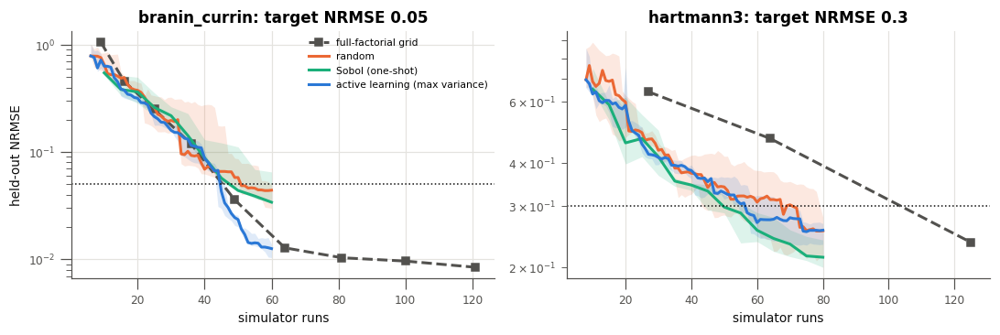
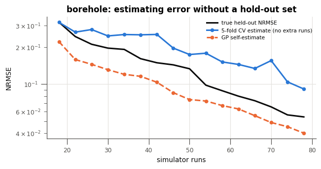
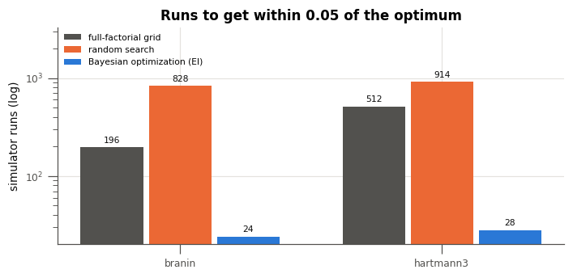
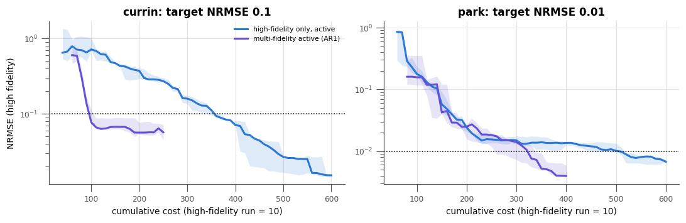
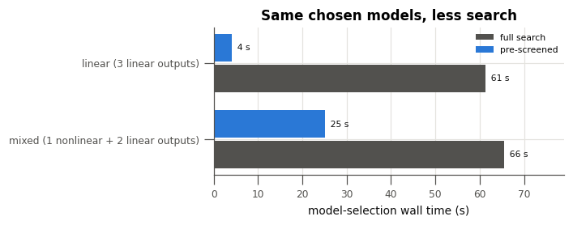
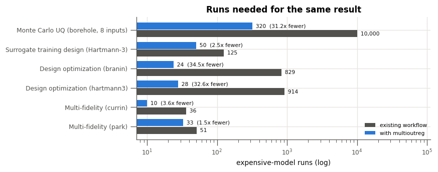

Cost Savings: What multioutreg Saves in an Existing Workflow¶
Most engineering and science teams already have a workflow for expensive models: a simulator (CFD, FEA, a process model) or a physical experiment, a design of experiments chosen up front (often a full-factorial grid or a hand-picked set of cases), and a fixed run budget. This notebook measures what changes when multioutreg is inserted into that workflow, in the currency the workflow pays: simulator runs, converted to money, wall-clock time and core-hours through a cost model you can
edit.
Every number below is measured, not assumed: each scenario runs the existing-workflow baseline and the multioutreg alternative on an analytic benchmark whose true answer is known, and counts how many runs each needs to reach the same accuracy. The benchmarks stand in for the expensive model; the analytic functions cost nothing to evaluate, so the comparison is exact. A summary of the results is on the Cost Savings and ROI page.
Scenarios
The cost model: turn runs into dollars, hours and core-hours
Many-query analysis: Monte Carlo uncertainty propagation on a surrogate instead of the simulator
Building a surrogate: grids, random, Sobol and active-learning designs, and when to stop
Design optimization: Bayesian optimization against random search and grids
Multi-fidelity: spending most of the budget on a cheap model
Model-selection compute: statistical pre-screening before the model search
The ledger: all savings in one table
Plugging into your pipeline: the
ask/tellloop for jobs that run outside PythonWhen the savings disappear
Medians over seeds are reported throughout; the number of seeds is kept small so the notebook runs in about ten minutes on a laptop.
Results at a glance¶
Runs of the expensive model needed for the same result, with and without multioutreg, priced with the default cost model of section 1 (2 h on 32 cores at $0.05 per core-hour, plus $5 per run, 8 jobs at a time: $8.20 and 64 core-hours per run). These are the numbers produced by the run saved in this notebook; section 7 recomputes them.
Task |
Existing workflow |
Runs: existing → |
Fewer runs |
Money saved |
Core-hours saved |
Wall-clock saved |
|---|---|---|---|---|---|---|
Monte Carlo uncertainty propagation (borehole, 8 inputs) |
Direct Monte Carlo, 10,000 samples |
10,000 → 320 |
31× |
$79,376 |
619,520 |
101 days |
Surrogate training design (Hartmann-3) |
Full-factorial grid |
125 → 50 |
2.5× |
$615 |
4,800 |
18 h |
Design optimization (Branin) |
Random search |
829 → 24 |
35× |
$6,601 |
51,520 |
8.4 days |
Design optimization (Hartmann-3) |
Random search |
914 → 28 |
33× |
$7,265 |
56,704 |
9.3 days |
Multi-fidelity surrogate (Currin) |
Active learning on the expensive model only |
36 → 10 |
3.6× |
$213 |
1,664 |
6 h |
Multi-fidelity surrogate (Park) |
Active learning on the expensive model only |
51 → 33 |
1.5× |
$148 |
1,152 |
4 h |
Total |
11,955 → 465 |
26× |
$94,218 |
735,360 |
120 days |
multioutreg’s own compute (surrogate fits, candidate scoring) is already subtracted; it took 5 to 41 seconds per scenario. Run counts are medians over 3 seeds. For multi-fidelity, runs are counted in expensive-model-equivalent cost units (one expensive run costs 10 cheap ones).
The same savings for a cheaper or a costlier simulator (section 7, re-priced without re-running anything):
Simulator |
Cost per run |
Money saved |
Core-hours saved |
Wall-clock saved |
|---|---|---|---|---|
Cheap: 10 min on 4 cores, no fixed cost, 32 at a time |
$0.03 |
$383 |
7,660 |
2.5 days |
Default: 2 h on 32 cores, $5 fixed, 8 at a time |
$8.20 |
$94,218 |
735,360 |
120 days |
Expensive: 24 h on 128 cores, $50 fixed, 4 at a time |
$203.60 |
$2,339,364 |
35,297,280 |
7.9 years |
Analyst compute. Statistical pre-screening before the model search (section 6) cut the search from 61.3 s to 4.0 s on linear outputs (15× faster) and from 65.5 s to 25.1 s on mixed outputs (2.6×), with the same held-out R². It is not in the tables above because it saves compute rather than simulator runs.
Where the savings are smaller: a cheap simulator (minutes per run), a low-dimensional problem where a grid is already competitive, or a cheap model that correlates poorly with the expensive one. Section 9 lists these cases.
[1]:
import time
import warnings
warnings.filterwarnings("ignore") # GP optimizer convergence chatter and dependency deprecations
from dataclasses import dataclass
import matplotlib.pyplot as plt
import numpy as np
import pandas as pd
from sklearn.gaussian_process.kernels import ConstantKernel, Matern, WhiteKernel
from sklearn.model_selection import KFold
from multioutreg.active import (
ActiveLearner,
MultiFidelityActiveLearner,
get_benchmark,
heldout_metrics,
)
from multioutreg.surrogates import AdditiveCorrectionVFM, GaussianProcessSurrogate
# Colors by role: multioutreg (blue), multi-fidelity (violet), random (orange),
# Sobol (aqua) and the existing-workflow grid / brute-force baseline (gray).
BLUE, ORANGE, AQUA, VIOLET = "#2a78d6", "#eb6834", "#1baf7a", "#6250d6"
INK, MUTED, GRID = "#0b0b0b", "#52514e", "#e4e3df"
plt.rcParams.update({
"figure.dpi": 110, "axes.edgecolor": MUTED, "axes.labelcolor": INK, "axes.titlesize": 11,
"axes.titleweight": "bold", "axes.spines.top": False, "axes.spines.right": False,
"axes.grid": True, "grid.color": GRID, "grid.linewidth": 0.8, "xtick.color": MUTED,
"ytick.color": MUTED, "lines.linewidth": 2, "legend.frameon": False, "font.size": 9,
"axes.labelsize": 9, "xtick.labelsize": 8, "ytick.labelsize": 8, "legend.fontsize": 7,
"figure.titlesize": 11, "axes.axisbelow": True,
})
SEEDS = range(3)
def gp():
# Matern-5/2 GP with a length-scale floor and a few optimizer restarts (same as the
# active-learning tutorial).
kernel = (ConstantKernel(1.0) * Matern(1.0, length_scale_bounds=(0.1, 100.0), nu=2.5)
+ WhiteKernel(1e-6, (1e-10, 1e-2)))
return GaussianProcessSurrogate(kernel=kernel, n_restarts_optimizer=2, random_state=0)
def band(ax, x, runs, color, label, **kw):
# Median line plus min-max band over seeds; runs has shape (n_seeds, len(x)).
runs = np.asarray(runs, dtype=float)
ax.fill_between(x, np.nanmin(runs, 0), np.nanmax(runs, 0), color=color, alpha=0.15, lw=0)
ax.plot(x, np.nanmedian(runs, 0), color=color, label=label, **kw)
def first_reaching(x, y, target):
# Smallest x whose y is at or below target, or None.
x, y = np.asarray(x), np.asarray(y)
hit = np.flatnonzero(y <= target)
return None if hit.size == 0 else x[hit[0]]
def grid_design(bench, k):
# Full-factorial grid with k levels per input: the classic "existing workflow" DOE.
d = bench.n_features
g = np.linspace(0, 1, k)
U = np.stack(np.meshgrid(*[g] * d, indexing="ij"), -1).reshape(-1, d)
return bench.bounds[:, 0] + U * (bench.bounds[:, 1] - bench.bounds[:, 0])
## 1. The cost model
Savings are counted in runs of the expensive model. SimulationCost turns runs into the three things a budget is written in:
money: core-hours times a price per core-hour (cloud or internal chargeback), plus any fixed cost per run (licenses, lab consumables, analyst set-up time);
wall-clock time: runs are executed in batches of
parallel_jobs, sonruns takeceil(n / parallel_jobs)rounds ofhours_per_run;compute: core-hours.
Edit the cell below with your own numbers. The defaults describe a mid-size CFD or FEA job: 2 hours on 32 cores at $0.05 per core-hour, plus $5 of license and set-up cost per run, with 8 jobs running at once. That is about $8 and 64 core-hours per run. Every table in the notebook is recomputed from this one object.
multioutreg’s own compute (fitting surrogates, scoring candidates) is measured on this machine and charged too, at one core.
[2]:
@dataclass
class SimulationCost:
hours_per_run: float = 2.0 # wall-clock hours for one run
cores_per_run: int = 32 # cores one run occupies
usd_per_core_hour: float = 0.05 # compute price
usd_fixed_per_run: float = 5.0 # licenses, consumables, set-up time per run
parallel_jobs: int = 8 # runs that can execute at the same time
def core_hours(self, n_runs):
return n_runs * self.hours_per_run * self.cores_per_run
def usd(self, n_runs):
return self.core_hours(n_runs) * self.usd_per_core_hour + n_runs * self.usd_fixed_per_run
def wall_hours(self, n_runs):
return np.ceil(n_runs / self.parallel_jobs) * self.hours_per_run
COST = SimulationCost()
print(f"one run: ${COST.usd(1):,.2f}, {COST.core_hours(1):,.0f} core-hours, {COST.hours_per_run} h wall-clock")
LEDGER = [] # one row per scenario, filled in as the notebook runs
def record(scenario, baseline, n_baseline, n_mor, overhead_s, note=""):
# Add a scenario to the ledger. overhead_s: measured multioutreg compute, in seconds.
LEDGER.append(dict(scenario=scenario, baseline=baseline, runs_baseline=n_baseline,
runs_multioutreg=n_mor, overhead_s=overhead_s, note=note))
one run: $8.20, 64 core-hours, 2.0 h wall-clock
## 2. Many-query analysis: Monte Carlo on a surrogate
Existing workflow. To propagate input uncertainty (manufacturing tolerances, uncertain material properties, operating conditions), sample the inputs and run the simulator on every sample. A 10,000-sample Monte Carlo study is a common minimum for a 99th-percentile estimate.
With ``multioutreg``. Run the simulator on a small space-filling design, fit a surrogate, and run the 10,000 (or 100,000) samples through the surrogate, which takes well under a second.
The test case is the 8-input borehole model (water flow through a borehole, a standard engineering benchmark). The reference answer comes from 1,000,000 evaluations of the true function. The question is: how many simulator runs does the surrogate need to be as accurate as the 10,000-run Monte Carlo study it replaces? A 10,000-sample estimate is itself noisy; its error is measured by repeating it on 20 independent samples.
[3]:
b = get_benchmark("borehole")
Y_ref = b(b.sample(1_000_000, method="random", seed=0)).ravel()
STATS = {
"mean": np.mean,
"std": np.std,
"P99": lambda y: np.quantile(y, 0.99),
}
truth = {k: f(Y_ref) for k, f in STATS.items()}
def rel_err(y):
return {k: abs(f(y) - truth[k]) / abs(truth[k]) for k, f in STATS.items()}
# Error of the existing workflow: 10,000 direct simulator runs, repeated on 20 samples.
N_MC = 10_000
mc_err = pd.DataFrame([rel_err(b(b.sample(N_MC, method="random", seed=100 + r)).ravel())
for r in range(20)])
# multioutreg: n simulator runs (Sobol), a GP, and 100,000 surrogate evaluations.
X_mc = b.sample(100_000, method="random", seed=7)
sizes = [20, 40, 80, 120, 160, 240, 320]
rows = []
for n in sizes:
for s in SEEDS:
X = b.sample(n, seed=s)
t0 = time.perf_counter()
model = gp().fit(X, b(X))
y_hat = model.predict(X_mc).ravel()
rows.append(dict(n=n, seed=s, seconds=time.perf_counter() - t0, **rel_err(y_hat)))
sur_err = pd.DataFrame(rows)
summary = sur_err.groupby("n")[list(STATS)].median().map(lambda v: f"{100 * v:.2f}%")
summary.loc[f"direct MC, {N_MC:,} runs"] = mc_err.median().map(lambda v: f"{100 * v:.2f}%")
print("median relative error of each statistic")
print(summary.to_string())
median relative error of each statistic
mean std P99
n
20 4.22% 10.25% 20.54%
40 0.36% 0.98% 7.34%
80 0.06% 0.68% 2.55%
120 0.02% 0.20% 1.53%
160 0.04% 0.14% 1.01%
240 0.02% 0.20% 0.62%
320 0.03% 0.25% 0.34%
direct MC, 10,000 runs 0.51% 0.68% 0.48%
[4]:
fig, axes = plt.subplots(1, 3, figsize=(12, 3.2), sharex=True)
for ax, stat in zip(axes, STATS):
runs = sur_err.pivot(index="seed", columns="n", values=stat).to_numpy() * 100
band(ax, sizes, runs, BLUE, "surrogate + 100k samples", marker="o", ms=4)
q = np.quantile(mc_err[stat] * 100, [0.1, 0.5, 0.9])
ax.axhspan(q[0], q[2], color=MUTED, alpha=0.12, lw=0)
ax.axhline(q[1], color=MUTED, ls="--", lw=1.5, label=f"direct MC, {N_MC:,} runs (median, 10–90%)")
ax.set(yscale="log", title=f"{stat} of flow rate", xlabel="simulator runs (surrogate training)")
axes[0].set_ylabel("relative error (%)")
axes[0].legend(loc="upper right")
fig.tight_layout()
plt.show()

[5]:
# Smallest design whose median error beats direct MC on every statistic.
med = sur_err.groupby("n")[list(STATS)].median()
ok = (med <= mc_err.median()).all(axis=1)
n_needed = int(ok[ok].index.min()) if ok.any() else None
overhead = sur_err.query("n == @n_needed")["seconds"].median() if n_needed else np.nan
print(f"surrogate matches a {N_MC:,}-run Monte Carlo study with {n_needed} runs "
f"({N_MC / n_needed:.0f}x fewer); fit + 100k predictions took {overhead:.1f} s")
record("Monte Carlo UQ (borehole, 8 inputs)", f"direct MC, {N_MC:,} samples", N_MC, n_needed, overhead,
"same or lower error on mean, std and P99")
surrogate matches a 10,000-run Monte Carlo study with 320 runs (31x fewer); fit + 100k predictions took 4.5 s
Reading the result. The surrogate’s error falls quickly with training size. The direct study’s error does not move, because it is set by its 10,000 samples. For the mean and the standard deviation, about 80 runs already beat the brute-force study. The 99th percentile is the hardest statistic, because it depends on how well the surrogate captures the tail of the response, and it sets the run count recorded in the ledger. If only means and spreads are needed, the saving is several times larger. The same fitted surrogate can then be reused for sensitivity analysis, what-if sweeps and dashboards at no further simulator cost.
## 3. Building a surrogate: which design, and when to stop
Existing workflow. Fix a design up front, usually a full-factorial grid (k levels per input, k^d runs) or a random set, run all of it, then fit.
With ``multioutreg``. Either use a space-filling Sobol design, or run ActiveLearner, which adds one run at a time where the surrogate is least certain and can stop as soon as the surrogate is good enough.
The metric is held-out NRMSE (RMSE over the test targets’ standard deviation, averaged over outputs) on 1,000 points. The question is how many runs each design needs to reach a target NRMSE.
[6]:
AL_PROBLEMS = {"branin_currin": (60, 0.05), "hartmann3": (80, 0.30)} # budget, target NRMSE
al_results, al_overhead = {}, {}
for name, (budget, target) in AL_PROBLEMS.items():
b = get_benchmark(name)
Xt = b.sample(1000, method="random", seed=123)
Yt = b(Xt)
n_init = 2 * b.n_features + 2
n = np.arange(n_init, budget + 1)
curves = {}
for acq in ("max_variance", "random"):
runs = []
for s in SEEDS:
al = ActiveLearner(gp, b.bounds, acquisition=acq, n_candidates=512, random_state=s)
t0 = time.perf_counter()
hist = al.run(b, n_init=n_init, n_iter=budget - n_init, X_test=Xt, Y_test=Yt)
if acq == "max_variance":
al_overhead.setdefault(name, []).append(time.perf_counter() - t0)
runs.append([h["nrmse"] for h in hist])
curves[acq] = (n, np.array(runs))
passive_n = np.arange(10, budget + 1, 5)
curves["sobol"] = (passive_n, np.array([
[heldout_metrics(gp().fit(X := b.sample(k, seed=s), b(X)), Xt, Yt)["nrmse"] for k in passive_n]
for s in SEEDS]))
ks = [k for k in range(3, 20) if k ** b.n_features <= 2.2 * budget]
curves["grid"] = (np.array([k ** b.n_features for k in ks]), np.array([[
heldout_metrics(gp().fit(X := grid_design(b, k), b(X)), Xt, Yt)["nrmse"] for k in ks]]))
al_results[name] = curves
rows = []
for name, curves in al_results.items():
target = AL_PROBLEMS[name][1]
row = {"problem": name, "target NRMSE": target}
for key, label in [("grid", "full-factorial grid"), ("random", "random"),
("sobol", "Sobol"), ("max_variance", "active learning")]:
x, runs = curves[key]
hit = first_reaching(x, np.median(runs, 0), target)
row[label] = "not reached" if hit is None else int(hit)
rows.append(row)
runs_to_target = pd.DataFrame(rows).set_index("problem")
print("simulator runs needed to reach the target (median over seeds)")
print(runs_to_target.to_string())
simulator runs needed to reach the target (median over seeds)
target NRMSE full-factorial grid random Sobol active learning
problem
branin_currin 0.05 49 51 50 45
hartmann3 0.30 125 68 50 57
[7]:
fig, axes = plt.subplots(1, 2, figsize=(10, 3.4))
for ax, (name, curves) in zip(axes, al_results.items()):
x, r = curves["grid"]
ax.plot(x, r[0], color=MUTED, ls="--", marker="s", ms=5, label="full-factorial grid")
band(ax, *curves["random"], ORANGE, "random")
band(ax, *curves["sobol"], AQUA, "Sobol (one-shot)")
band(ax, *curves["max_variance"], BLUE, "active learning (max variance)")
ax.axhline(AL_PROBLEMS[name][1], color=INK, lw=1, ls=":")
ax.set(yscale="log", title=f"{name}: target NRMSE {AL_PROBLEMS[name][1]}", xlabel="simulator runs")
axes[0].set_ylabel("held-out NRMSE")
axes[0].legend(loc="upper right")
fig.tight_layout()
plt.show()

Reading the result. The large and reliable saving is leaving the grid. A full-factorial grid spends its runs on repeated values of each input, and its size jumps in steps of k^d. In three inputs the next grid after 64 runs has 125. Sobol and active designs reach the same error with far fewer runs, and the gap widens with every added input.
Active learning against a good Sobol design is a closer race. On smooth, stationary problems like these, max-variance sampling with a GP is itself a space-filling design, so it does about as well as Sobol, ahead on Branin–Currin and behind on Hartmann-3 (see the active-learning tutorial for more problems). What the sequential loop adds is the option to stop early, which a one-shot design does not have. Stopping needs an estimate of the surrogate’s error without a hold-out set, since a hold-out set costs simulator runs too. Two estimates are free:
the GP’s own predictive standard deviation averaged over the domain, standardized like NRMSE;
5-fold cross-validation on the runs collected so far (compute only, no new runs).
[8]:
def gp_self_estimate(model, X_pool, Y_train):
_, sd = model.predict(X_pool, return_std=True)
return float(np.mean(np.sqrt((sd ** 2).mean(0)) / Y_train.std(0)))
def cv_nrmse(X, Y):
P = np.zeros_like(Y)
for tr, te in KFold(5, shuffle=True, random_state=0).split(X):
P[te] = gp().fit(X[tr], Y[tr]).predict(X[te])
return float(np.mean(np.sqrt(((P - Y) ** 2).mean(0)) / Y.std(0)))
b = get_benchmark("borehole")
Xt = b.sample(1000, method="random", seed=123)
Yt = b(Xt)
X_pool = b.sample(2048, seed=99)
al = ActiveLearner(gp, b.bounds, n_candidates=512, random_state=0)
hist = al.run(b, n_init=18, n_iter=62, X_test=Xt, Y_test=Yt)
check = []
for h in hist[::4]:
k = h["n_evals"]
model = gp().fit(al.X_[:k], al.Y_[:k])
check.append(dict(runs=k, true=h["nrmse"], gp_estimate=gp_self_estimate(model, X_pool, al.Y_[:k]),
cv_estimate=cv_nrmse(al.X_[:k], al.Y_[:k])))
check = pd.DataFrame(check)
fig, ax = plt.subplots(figsize=(6, 3.2))
ax.plot(check.runs, check.true, color=INK, label="true held-out NRMSE")
ax.plot(check.runs, check.cv_estimate, color=BLUE, marker="o", ms=4, label="5-fold CV estimate (no extra runs)")
ax.plot(check.runs, check.gp_estimate, color=ORANGE, marker="o", ms=4, ls="--", label="GP self-estimate")
ax.set(yscale="log", xlabel="simulator runs", ylabel="NRMSE", title="borehole: estimating error without a hold-out set")
ax.legend()
fig.tight_layout()
plt.show()
print(check.round(3).to_string(index=False))

runs true gp_estimate cv_estimate
18 0.319 0.222 0.318
22 0.244 0.158 0.265
26 0.211 0.145 0.278
30 0.196 0.131 0.247
34 0.192 0.120 0.253
38 0.161 0.116 0.252
42 0.149 0.104 0.254
46 0.144 0.085 0.197
50 0.133 0.075 0.174
54 0.098 0.073 0.179
58 0.088 0.067 0.152
62 0.080 0.063 0.145
66 0.073 0.055 0.134
70 0.065 0.049 0.155
74 0.056 0.045 0.104
78 0.054 0.040 0.091
Use cross-validation as the stopping rule. The GP’s self-estimate is optimistic: the model is more confident than it should be, so stopping on it would stop too early. CV on the actively chosen points is pessimistic, because those points sit where the function is hardest, so when “CV NRMSE ≤ target” fires, the true error is at or below the target. That makes it a safe rule: it never stops too early, at the price of a few extra runs.
For the ledger, this scenario is the move from a full-factorial grid to a sequential design at equal accuracy, on the 3-input Hartmann problem (the 2-input problem’s grid happens to be competitive). For the overhead, the measured time of the full active-learning run (all GP refits) is charged.
[9]:
row = runs_to_target.loc["hartmann3"]
n_grid = int(row["full-factorial grid"])
best_seq = min(v for k, v in row.items() if k in ("Sobol", "active learning") and v != "not reached")
print(f"hartmann3: grid {n_grid} runs vs {best_seq:.0f} runs for the best sequential/space-filling design")
record("Surrogate training design (Hartmann-3)", f"full-factorial grid ({n_grid} runs)", n_grid, int(best_seq),
float(np.median(al_overhead["hartmann3"])), f"target NRMSE {AL_PROBLEMS['hartmann3'][1]}")
hartmann3: grid 125 runs vs 50 runs for the best sequential/space-filling design
## 4. Design optimization
Existing workflow. Find the inputs that minimize an output (drag, stress, cost) by sweeping a grid, or by random / hand-picked trial runs.
With ``multioutreg``. ActiveLearner(acquisition="ei") runs Bayesian optimization: each run goes where the expected improvement over the best value so far is largest.
The metric is the number of runs until the best value found is within 0.05 of the known global minimum. Random search is simulated on 50 independent streams of up to 20,000 runs; the grid is the smallest k^d grid whose best point is within the tolerance.
[10]:
OPT = {"branin": 60, "hartmann3": 80}
TOL = 0.05
opt_rows, opt_overhead = [], {}
for name, budget in OPT.items():
b = get_benchmark(name)
n_init = 2 * b.n_features + 2
ei_hits = []
for s in range(5):
al = ActiveLearner(gp, b.bounds, acquisition="ei", n_candidates=1024, random_state=s)
t0 = time.perf_counter()
hist = al.run(b, n_init=n_init, n_iter=budget - n_init)
opt_overhead.setdefault(name, []).append(time.perf_counter() - t0)
gap = np.array([h["best"] for h in hist]) - b.minimum
hit = first_reaching([h["n_evals"] for h in hist], gap, TOL)
ei_hits.append(np.inf if hit is None else hit)
rs_hits = []
for s in range(50):
gap = np.minimum.accumulate(b(b.sample(20_000, method="random", seed=1000 + s)).ravel()) - b.minimum
hit = first_reaching(np.arange(1, gap.size + 1), gap, TOL)
rs_hits.append(np.inf if hit is None else hit)
grid_hit = next((k ** b.n_features for k in range(3, 200)
if b(grid_design(b, k)).min() - b.minimum <= TOL), None)
opt_rows.append({"problem": name, "Bayesian optimization (EI)": np.median(ei_hits),
"EI worst seed": np.max(ei_hits), "random search": np.median(rs_hits),
"full-factorial grid": grid_hit})
opt_table = pd.DataFrame(opt_rows).set_index("problem")
print(f"simulator runs until within {TOL} of the global minimum (median over seeds)")
print(opt_table.to_string())
simulator runs until within 0.05 of the global minimum (median over seeds)
Bayesian optimization (EI) EI worst seed random search full-factorial grid
problem
branin 24.0 30 828.5 196
hartmann3 28.0 52 913.5 512
[11]:
fig, ax = plt.subplots(figsize=(6.5, 3.2))
labels = list(opt_table.index)
cols = [("full-factorial grid", MUTED), ("random search", ORANGE), ("Bayesian optimization (EI)", BLUE)]
w = 0.26
for i, (col, color) in enumerate(cols):
vals = opt_table[col].astype(float).to_numpy()
xs = np.arange(len(labels)) + (i - 1) * w
ax.bar(xs, vals, w * 0.92, color=color, label=col)
for x, v in zip(xs, vals):
ax.text(x, v * 1.08, f"{v:,.0f}", ha="center", va="bottom", fontsize=7, color=INK)
ax.set(yscale="log", xticks=range(len(labels)), xticklabels=labels, ylabel="simulator runs (log)",
title=f"Runs to get within {TOL} of the optimum")
ax.set_ylim(top=ax.get_ylim()[1] * 3)
ax.legend(loc="upper left")
fig.tight_layout()
plt.show()
for name in OPT:
r = opt_table.loc[name]
record(f"Design optimization ({name})", "random search", float(r["random search"]),
float(r["Bayesian optimization (EI)"]), float(np.median(opt_overhead[name])),
f"within {TOL} of the global minimum")

Reading the result. This is where the savings are largest. Random search and grids pay for every run whether or not it is near the optimum. Expected improvement concentrates runs near the optimum once the surrogate knows roughly where it is. The best point found is always a real, evaluated run, so no separate confirmation run is needed.
## 5. Multi-fidelity: let a cheap model carry most of the load
Existing workflow. Many teams have a cheap model (coarse mesh, empirical correlation, reduced physics) next to the expensive one, but use the cheap model only for exploration by hand and train any surrogate on the expensive model alone.
With ``multioutreg``. MultiFidelityActiveLearner with the AR1 surrogate AdditiveCorrectionVFM picks both where to run and which fidelity, per unit cost.
Costs: low fidelity 1, high fidelity 10 (so one cost unit is a tenth of a high-fidelity run). The baseline is the existing workflow’s best option, active learning on the high fidelity only. The metric is held-out NRMSE against the high fidelity.
[12]:
def ar1():
return AdditiveCorrectionVFM(lo_surrogate_cls=gp, hi_surrogate_cls=gp, oof_cv=None)
def at_costs(cost, err, grid):
# Error of the latest model fitted within each cost on the grid (step function).
cost, err = np.asarray(cost), np.asarray(err)
return np.array([err[cost <= c][-1] if np.any(cost <= c) else np.nan for c in grid])
MF = {"currin": (250, 600, 0.10), "park": (400, 600, 0.01)} # MF budget, hi-only budget, target
mf_results, mf_overhead = {}, {}
for name, (budget_mf, budget_hi, target) in MF.items():
b = get_benchmark(name)
Xt = b.sample(1000, method="random", seed=123)
Yt = b(Xt)
sims = {lvl: (lambda X, lvl=lvl: b(X, lvl)) for lvl in b.levels}
c_hi = b.costs["hi"]
n_hi0 = b.n_features + 2
grid = np.arange(10, budget_hi + 1, 10)
curves = {"mf": [], "hi": []}
for s in SEEDS:
mf = MultiFidelityActiveLearner(ar1, b.bounds, b.levels, b.costs, n_candidates=256, random_state=s)
t0 = time.perf_counter()
hist = mf.run(sims, budget=budget_mf, n_init={"lo": 3 * n_hi0, "hi": n_hi0}, X_test=Xt, Y_test=Yt)
mf_overhead.setdefault(name, []).append(time.perf_counter() - t0)
mf_curve = at_costs([h["cost"] for h in hist], [h["nrmse"] for h in hist], grid)
curves["mf"].append(np.where(grid <= budget_mf, mf_curve, np.nan)) # nothing beyond its budget
al = ActiveLearner(gp, b.bounds, n_candidates=256, random_state=s)
hist = al.run(lambda X: b(X, "hi"), n_init=n_hi0, n_iter=int(budget_hi / c_hi) - n_hi0, X_test=Xt, Y_test=Yt)
curves["hi"].append(at_costs([h["n_evals"] * c_hi for h in hist], [h["nrmse"] for h in hist], grid))
mf_results[name] = (grid, {k: np.array(v) for k, v in curves.items()})
rows = []
for name, (grid, curves) in mf_results.items():
target = MF[name][2]
c_mf = first_reaching(grid, np.nanmedian(curves["mf"], 0), target)
c_hi = first_reaching(grid, np.nanmedian(curves["hi"], 0), target)
rows.append({"problem": name, "target NRMSE": target, "high-fidelity only": c_hi, "multi-fidelity": c_mf})
mf_table = pd.DataFrame(rows).set_index("problem")
print("cost (low = 1, high = 10) to reach the target, median over seeds")
print(mf_table.to_string())
cost (low = 1, high = 10) to reach the target, median over seeds
target NRMSE high-fidelity only multi-fidelity
problem
currin 0.10 360 100
park 0.01 510 330
[13]:
fig, axes = plt.subplots(1, 2, figsize=(10, 3.3))
for ax, (name, (grid, curves)) in zip(axes, mf_results.items()):
band(ax, grid, curves["hi"], BLUE, "high-fidelity only, active")
band(ax, grid, curves["mf"], VIOLET, "multi-fidelity active (AR1)")
ax.axhline(MF[name][2], color=INK, lw=1, ls=":")
ax.set(yscale="log", title=f"{name}: target NRMSE {MF[name][2]}", xlabel="cumulative cost (high-fidelity run = 10)")
axes[0].set_ylabel("NRMSE (high fidelity)")
axes[0].legend()
fig.tight_layout()
plt.show()
for name, r in mf_table.iterrows():
if pd.notna(r["high-fidelity only"]) and pd.notna(r["multi-fidelity"]):
# Express both in high-fidelity-run equivalents (cost / 10).
record(f"Multi-fidelity ({name})", "active learning on high fidelity only",
r["high-fidelity only"] / 10, r["multi-fidelity"] / 10,
float(np.median(mf_overhead[name])), "cost in high-fidelity-run equivalents")

Reading the result. On Currin the cheap model is informative and the multi-fidelity learner reaches the target at a fraction of the high-fidelity-only cost. Its error then levels off near 0.06, though: the fused model is limited by how well the AR1 correction captures the gap between levels, and with enough budget the high-fidelity-only learner goes lower. Multi-fidelity buys a good-enough surrogate early. It does not replace high-fidelity data for very tight targets. On Park the gain is
smaller (1.5x), and the multi-fidelity learner keeps improving. The saving depends on how well the cheap model correlates with the expensive one, and on the cost ratio. The learner checks that correlation on the high-fidelity data (level_trust), and keeps at least 25% of spending on the high fidelity, so a useless cheap model wastes little (see the active-learning tutorial, section 8).
## 6. Model-selection compute: pre-screening
The previous scenarios save simulator runs. This one saves the analyst’s compute. Picking a surrogate means a cross-validated grid search over many model families, repeated every time the data changes. AutoDetectMultiOutputRegressor(pre_screen=True) first runs cheap statistical tests (linearity, normality, heteroscedasticity, sample size), then skips families the data does not justify. For example, it drops tree ensembles and MLPs when a linear model is adequate, and it drops exact GPs above
300 rows.
Ten candidate families, 5-fold CV, three outputs; held-out R² on 1,000 test rows.
[14]:
from sklearn.ensemble import (ExtraTreesRegressor, GradientBoostingRegressor,
HistGradientBoostingRegressor, RandomForestRegressor)
from sklearn.gaussian_process import GaussianProcessRegressor
from sklearn.linear_model import LinearRegression
from sklearn.neighbors import KNeighborsRegressor
from sklearn.neural_network import MLPRegressor
from sklearn.pipeline import make_pipeline
from sklearn.preprocessing import StandardScaler
from sklearn.svm import SVR
from sklearn.tree import DecisionTreeRegressor
from multioutreg.model_selection import AutoDetectMultiOutputRegressor
def candidates():
sc = lambda est: make_pipeline(StandardScaler(), est)
return [
(LinearRegression(), {}),
(DecisionTreeRegressor(random_state=0), {"max_depth": [4, 8, None]}),
(sc(KNeighborsRegressor()), {"kneighborsregressor__n_neighbors": [3, 5, 9]}),
(sc(SVR()), {"svr__C": [1.0, 10.0, 100.0], "svr__gamma": ["scale", 0.1]}),
(sc(GaussianProcessRegressor(normalize_y=True)), {}),
(RandomForestRegressor(random_state=0), {"n_estimators": [100, 300], "max_depth": [None, 8]}),
(ExtraTreesRegressor(random_state=0), {"n_estimators": [100, 300], "max_depth": [None, 8]}),
(GradientBoostingRegressor(random_state=0), {"n_estimators": [100, 300], "max_depth": [2, 4]}),
(HistGradientBoostingRegressor(random_state=0), {"learning_rate": [0.05, 0.1], "max_iter": [100, 300]}),
(sc(MLPRegressor(max_iter=1000, random_state=0)),
{"mlpregressor__hidden_layer_sizes": [(64,), (64, 64)], "mlpregressor__alpha": [1e-4, 1e-2]}),
]
rng = np.random.default_rng(0)
n_train, n_test = 200, 1000
X = rng.uniform(-1, 1, size=(n_train + n_test, 6))
Y_lin = X @ rng.normal(size=(6, 3)) + 0.2 * rng.normal(size=(n_train + n_test, 3))
Y_mix = Y_lin.copy()
Y_mix[:, 0] = np.sin(3 * X[:, 0]) + X[:, 1] ** 2 + 0.1 * rng.normal(size=n_train + n_test)
DATASETS = {"linear (3 linear outputs)": Y_lin, "mixed (1 nonlinear + 2 linear outputs)": Y_mix}
rows = []
for label, Y in DATASETS.items():
for pre_screen in (False, True):
est, grids = zip(*candidates())
model = AutoDetectMultiOutputRegressor(list(est), list(grids), cv=5, pre_screen=pre_screen)
t0 = time.perf_counter()
model.fit(X[:n_train], Y[:n_train])
seconds = time.perf_counter() - t0
P, Yte = model.predict(X[n_train:]), Y[n_train:]
r2 = 1 - ((P - Yte) ** 2).sum(0) / ((Yte - Yte.mean(0)) ** 2).sum(0)
rows.append({"data": label, "pre_screen": pre_screen, "fit seconds": round(seconds, 1),
"families searched / output": [len(s) for s in model.selection_scores_],
"test R² / output": np.round(r2, 3).tolist()})
screen_table = pd.DataFrame(rows)
print(screen_table.to_string(index=False))
data pre_screen fit seconds families searched / output test R² / output
linear (3 linear outputs) False 61.3 [10, 10, 10] [0.968, 0.986, 0.96]
linear (3 linear outputs) True 4.0 [5, 5, 5] [0.968, 0.986, 0.96]
mixed (1 nonlinear + 2 linear outputs) False 65.5 [10, 10, 10] [0.962, 0.986, 0.96]
mixed (1 nonlinear + 2 linear outputs) True 25.1 [10, 5, 5] [0.962, 0.986, 0.96]
[15]:
fig, ax = plt.subplots(figsize=(6.5, 2.6))
labels = list(DATASETS)
for i, (ps, color, name) in enumerate([(False, MUTED, "full search"), (True, BLUE, "pre-screened")]):
vals = screen_table[screen_table.pre_screen == ps]["fit seconds"].to_numpy()
ys = np.arange(len(labels)) + (0.2 if not ps else -0.2)
ax.barh(ys, vals, 0.36, color=color, label=name)
for y, v in zip(ys, vals):
ax.text(v, y, f" {v:.0f} s", va="center", fontsize=7, color=INK)
ax.set(yticks=range(len(labels)), yticklabels=labels, xlabel="model-selection wall time (s)",
title="Same chosen models, less search")
ax.invert_yaxis()
ax.set_xlim(right=ax.get_xlim()[1] * 1.15)
ax.legend(loc="upper right")
fig.tight_layout()
plt.show()
full = screen_table[~screen_table.pre_screen]["fit seconds"].sum()
fast = screen_table[screen_table.pre_screen]["fit seconds"].sum()
print(f"pre-screening cut model-selection time by {100 * (1 - fast / full):.0f}% "
f"({full:.0f} s -> {fast:.0f} s) on these two datasets")

pre-screening cut model-selection time by 77% (127 s -> 29 s) on these two datasets
Reading the result. On the linear outputs pre-screening skips the nonlinear families, and the search picks the same linear model as the full search with the same held-out R² in a fraction of the time. On the nonlinear output the tree ensembles stay in, so the saving there comes only from the linear outputs. The saving grows with the size of the candidate list: AutoDetectMultiOutputRegressor.with_vendored_surrogates() searches 18 or more families.
Pre-screening is not free of risk. When a heavy model would have scored slightly better on a nonlinear output, skipping it can cost a little accuracy. Compare against the full search once on a representative dataset before switching it on everywhere.
This scenario is not in the ledger below, because it saves analyst compute rather than simulator runs.
## 7. The ledger
Each scenario above recorded the runs its existing-workflow baseline needed and the runs multioutreg needed for the same result. Here they are priced with the cost model from section 1. multioutreg’s own compute is the measured wall time of its surrogate fitting and candidate scoring, charged as single-core hours at the same price.
[16]:
def price(ledger, cost):
df = pd.DataFrame(ledger)
for col in ("runs_baseline", "runs_multioutreg"):
df[col] = np.ceil(df[col].astype(float)).astype(int)
df["runs_saved"] = df.runs_baseline - df.runs_multioutreg
df["fewer_runs"] = df.runs_baseline / df.runs_multioutreg
df["overhead_core_h"] = df.overhead_s / 3600
df["usd_saved"] = cost.usd(df.runs_saved) - df.overhead_core_h * cost.usd_per_core_hour
df["core_hours_saved"] = cost.core_hours(df.runs_saved) - df.overhead_core_h
df["wall_hours_saved"] = cost.wall_hours(df.runs_baseline) - cost.wall_hours(df.runs_multioutreg) - df.overhead_s / 3600
return df
ledger = price(LEDGER, COST)
show = ledger[["scenario", "baseline", "runs_baseline", "runs_multioutreg", "fewer_runs",
"usd_saved", "core_hours_saved", "wall_hours_saved", "overhead_s"]]
print(show.to_string(index=False, formatters={
"fewer_runs": "{:.1f}x".format, "usd_saved": "${:,.0f}".format,
"core_hours_saved": "{:,.0f}".format, "wall_hours_saved": "{:,.0f}".format,
"overhead_s": "{:.0f}".format}))
scenario baseline runs_baseline runs_multioutreg fewer_runs usd_saved core_hours_saved wall_hours_saved overhead_s
Monte Carlo UQ (borehole, 8 inputs) direct MC, 10,000 samples 10000 320 31.2x $79,376 619,520 2,420 5
Surrogate training design (Hartmann-3) full-factorial grid (125 runs) 125 50 2.5x $615 4,800 18 8
Design optimization (branin) random search 829 24 34.5x $6,601 51,520 202 9
Design optimization (hartmann3) random search 914 28 32.6x $7,265 56,704 222 12
Multi-fidelity (currin) active learning on high fidelity only 36 10 3.6x $213 1,664 6 34
Multi-fidelity (park) active learning on high fidelity only 51 33 1.5x $148 1,152 4 41
[17]:
fig, ax = plt.subplots(figsize=(8, 3.2))
names = ledger.scenario.tolist()
ys = np.arange(len(names))
ax.barh(ys + 0.2, ledger.runs_baseline, 0.36, color=MUTED, label="existing workflow")
ax.barh(ys - 0.2, ledger.runs_multioutreg, 0.36, color=BLUE, label="with multioutreg")
for y, (nb, nm, f) in enumerate(zip(ledger.runs_baseline, ledger.runs_multioutreg, ledger.fewer_runs)):
ax.text(nb, y + 0.2, f" {nb:,}", va="center", fontsize=7, color=INK)
ax.text(nm, y - 0.2, f" {nm:,} ({f:.1f}x fewer)", va="center", fontsize=7, color=INK)
ax.set(xscale="log", yticks=ys, yticklabels=names, xlabel="expensive-model runs (log)",
title="Runs needed for the same result")
ax.set_xlim(right=ax.get_xlim()[1] * 8)
ax.invert_yaxis()
ax.legend(loc="lower right")
fig.tight_layout()
plt.show()

Your numbers. The run counts are properties of the problems. The money and time are properties of your simulator. Re-price the same ledger for a cheap and an expensive model without re-running anything:
[18]:
PROFILES = {
"cheap: 10 min, 4 cores, no fixed cost": SimulationCost(1 / 6, 4, 0.05, 0.0, 32),
"default: 2 h, 32 cores, $5 fixed": COST,
"expensive: 24 h, 128 cores, $50 fixed": SimulationCost(24, 128, 0.05, 50.0, 4),
}
rows = []
for label, cost in PROFILES.items():
df = price(LEDGER, cost)
rows.append({"cost profile": label, "per run": f"${cost.usd(1):,.2f}",
"total $ saved": f"${df.usd_saved.sum():,.0f}",
"core-hours saved": f"{df.core_hours_saved.sum():,.0f}",
"wall-clock days saved": f"{df.wall_hours_saved.sum() / 24:,.1f}"})
print(pd.DataFrame(rows).to_string(index=False))
cost profile per run total $ saved core-hours saved wall-clock days saved
cheap: 10 min, 4 cores, no fixed cost $0.03 $383 7,660 2.5
default: 2 h, 32 cores, $5 fixed $8.20 $94,218 735,360 119.7
expensive: 24 h, 128 cores, $50 fixed $203.60 $2,339,364 35,297,280 2,873.0
The cheap profile is the honest boundary case. When a run takes minutes, the money saved is small and most of the value is calendar time. The Monte Carlo study is the exception, because 10,000 runs are costly even at a few cents each. When a run takes a day on a cluster, each run saved is worth more than all of multioutreg’s compute in this notebook combined.
## 8. Plugging into your pipeline
None of this requires the simulator to be a Python function. Real simulators run on a cluster queue or in a lab, and ActiveLearner exposes the same loop as ask / tell: ask for the next batch of inputs, run them however you run them today, tell the results back. Only the DOE step of the existing pipeline changes; the job scripts, the queue and the post-processing stay as they are.
The cell below uses a stand-in submit_and_wait with the borehole function. In practice it would write input decks, submit them with sbatch / qsub or your workflow manager, wait, and parse the outputs. Batches of parallel_jobs keep every queue slot busy, and the cross-validation stopping rule from section 3 ends the loop.
[19]:
b = get_benchmark("borehole")
def submit_and_wait(X):
# Stand-in for: write input decks, submit to the scheduler, wait, parse results.
return b(X)
TARGET = 0.10 # stop when cross-validated NRMSE is at or below this
learner = ActiveLearner(gp, b.bounds, batch_size=COST.parallel_jobs, random_state=0)
X0 = learner.initial_design(16) # round 0: a small space-filling design
learner.tell(X0, submit_and_wait(X0))
for round_ in range(1, 20):
err = cv_nrmse(learner.X_, learner.Y_)
print(f"round {round_:>2}: {len(learner.X_):>3} runs, CV NRMSE {err:.3f}")
if err <= TARGET:
break
X_next = learner.ask() # the next batch of 8 inputs to run
learner.tell(X_next, submit_and_wait(X_next))
surrogate = learner.fit() # a fitted multioutreg surrogate
Xt = b.sample(1000, method="random", seed=123)
print(f"stopped after {len(learner.X_)} runs; true held-out NRMSE {heldout_metrics(surrogate, Xt, b(Xt))['nrmse']:.3f}")
round 1: 16 runs, CV NRMSE 0.180
round 2: 24 runs, CV NRMSE 0.400
round 3: 32 runs, CV NRMSE 0.242
round 4: 40 runs, CV NRMSE 0.224
round 5: 48 runs, CV NRMSE 0.167
round 6: 56 runs, CV NRMSE 0.163
round 7: 64 runs, CV NRMSE 0.153
round 8: 72 runs, CV NRMSE 0.138
round 9: 80 runs, CV NRMSE 0.094
stopped after 80 runs; true held-out NRMSE 0.052
The stop is conservative, as section 3 predicted: the loop stops when the cross-validated estimate reaches the target, and by then the true error is usually well below it. Raise TARGET to stop sooner. The rule errs towards spending a few extra runs, not towards handing over a surrogate that is worse than you asked for.
The fitted surrogate is a normal multioutreg estimator. It can be scored with the performance metrics, wrapped with conformal prediction intervals, written to an HTML report, or saved with joblib and loaded in downstream tools.
## 9. When the savings disappear
These results are on analytic benchmarks chosen to be representative, not best cases. The savings shrink or vanish when:
The simulator is cheap. If a run takes seconds, run it directly. A surrogate earns its keep when runs are expensive or the analysis needs many of them.
The response is rough or high-dimensional. A GP with 8 inputs (borehole) works well; with 50 inputs, or discontinuities and regime changes, many more training runs are needed. Use the hold-out or CV check before trusting a surrogate for a decision.
A good space-filling design is already in place. Against Sobol, max-variance active learning is roughly break-even on smooth problems (section 3). The remaining gain is the stopping rule.
The cheap fidelity is weakly correlated. Multi-fidelity savings depend on it. The learner’s safeguards limit the waste, but do not create savings that are not there.
Final decisions still need the real model. A design picked on a surrogate should be confirmed with a real run. Bayesian optimization already evaluates its best point. For surrogate-only analyses, budget a handful of confirmation runs.